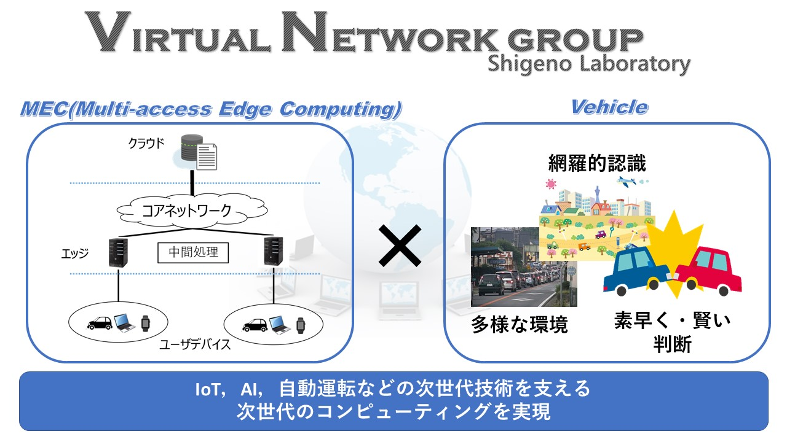

VN班とは
VN:Virtual Networks
VN班では，IoTや，自動運転といった次世代の技術を支える次世代のネットワークを実現するべく研究を行っています．
自動運転を実現するために「MEC（Multi-access Edge Computing）」という技術を柱として研究を進めています．
MECでは従来のクラウドコンピューティングに加えて，ユーザにより近い位置にエッジサーバを配置し，
中間処理を行うことでコアネットワークへの負荷を分散し，通信の低遅延化をもたらします．自動運転を実現するためには交通情報の「網羅的な把握」や気象や渋滞などの「多様な環境への対応」、事故回避や衝突回避など「賢く、素早い判断」が必要になります。
自動運転を支援するために「MEC」を 適用することで従来のネットワークでは実現できなかったアプリケーションを実現することを目指して研究を進めています．
Keyword
マルチアクセスエッジコンピューティング，自動運転，コンテナ，SLAM
VN班イメージ

VN班メンバー（2021年度版）
修士2年
松浦 祐一郎
テキストCAPTHAを利用したセキュリティについての研究を行なっています！普段は和気藹々とした雰囲気です．ミーティングを気軽に入れることができ，的確なアドバイスがもらえるので研究を進めやすいです！
修士2年
武藤 晟
自動車アプリケーションとエッジコンピューティングを組み合わせた研究を行っています．ネットワークや最新技術に興味のある方は是非一度研究室に来てみてください！
修士1年
松下 尚樹
LIDARというレーザによって物体までの距離を測る装置を複数組み合わせ，デジタルツインを作成する研究を行なっています．次世代アプリケーションを支えるネットワークに興味がある人は向いていると思います！